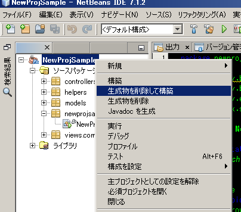
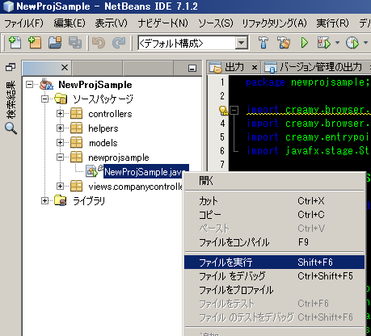
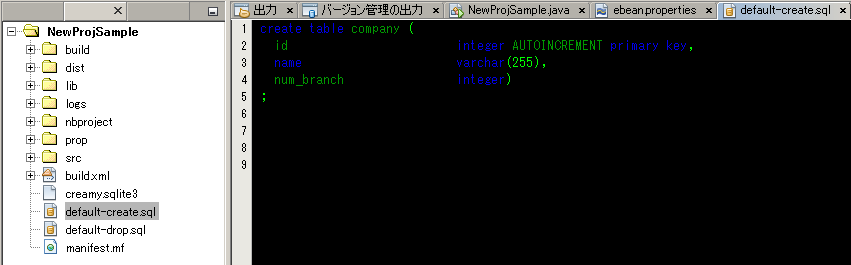
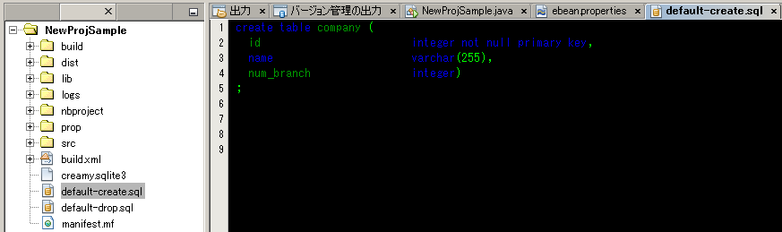
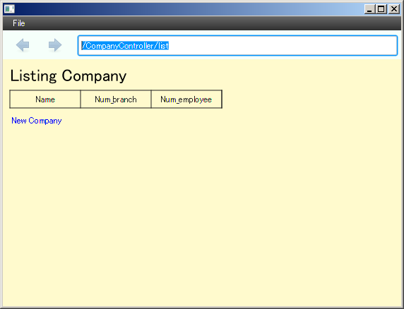
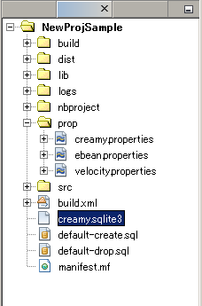

scaffoldコマンドを実行することにより、フレームワークに必要なMVCの各要素を生成します。
(scaffoldは、アプリケーション開発の足場を作成することです。)
対象のプロジェクトのフォルダに移動し、テーブル名やそのカラム名、属性名を指定しながらscaffoldコマンドを実行します。コマンドの文法は以下の通りです。
scaffold [テーブル名] カラム名１:属性名 カラム名２:属性名 ・・・
テーブル名およびカラム名には、任意の文字列を指定できます。先頭は英字を指定します（数字・記号は指定できません）。
属性名には、String、Short、Long、Integer、Double、Floatのいずれかを指定します。
（例）
1 | creamy_tools scaffold Company name:String num_branch:Integer
|
“scaffold command done!”のメッセージ表示がされたら成功です。
main関数の記述されているエントリーポイントクラスのstartメソッドが、以下のように書き換えられています。
1 2 3 4 5 6 7 | public void start(Stage primaryStage) {
Browser browser = new Browser("");
browser.setMenuBar(new DefaultBrowserMenuBar());
browser.setHeader(new DefaultHeader());
primaryStage.setScene(browser);
primaryStage.show();
}
|
ただ、Browerのコンストラクタに指定するパスは空文字で生成されるので以下の例に従って記述します。 XXXXXXXの部分は、controllerパッケージ配下に生成されたクラス名を参照して指定します（scaffold実行時に指定したテーブル名になります）。
1 | Browser browser = new Browser("XXXXXXXController/list");
|
scaffold実行後のsrcフォルダ配下は以下のようになります。
プロジェクトフォルダ
│ ・・・
└─src
├─controllers
│ CompanyController.java ・・・"Company"の部分はscaffold実行時に指定したテーブル名になる。
│
├─helpers
│ render.vm
│
├─models
│ Company.java ・・・"Company"の部分はscaffold実行時に指定したテーブル名になる。
│
├─newprojsample ・・・NetBeans上作成されたパッケージ名（プロジェクト名と同じ）になる。
│ NewProjSample.java ・・・エントリーポイントクラス。初期起動画面パスの記述の修正が必要。
│
└─views
└─companycontroller ・・・"company"の部分は指定したテーブル名になる。
Edit.java
Edit.vm.fxml
Form.java
Form.vm.fxml
List.java
List.vm.fxml
Make.java
Make.vm.fxml
Show.java
Show.vm.fxml
プロジェクトを選択して右クリックし、「生成物を削除して構築」を選択します。コンソールにエラーが出なかったらビルド成功です。
エントリーポイントクラスを選択して右クリックし、「ファイルを実行」を選択します。
初回実行時なので、CreamyのO/RマッパのEbeanが、Modelの定義内容からDDLを生成して実行し、DB上にテーブルをcreateしようとします。 しかし、ebeanが生成するDDLは、sqlite3でサポートされていない文法であるAUTOINCLENTを使用しているため、ここでエラーが出ます。
※エラーメッセージ例
java.sql.SQLException: [SQLITE_ERROR] SQL error or missing database (no such table: company)
エラーを回避するため、DDLファイルを修正します。プロジェクトフォルダの直下にdefault-create.sqlファイルが生成されているので、これを修正します。 AUTOINCRENTを、not nullに置き換えます。
・修正前default-create.sql
・修正後default-create.sql
修正したDDLファイルを再度のDDL生成で上書きしないよう、Ebeanの設定ファイルを修正します。
・\prop\ebean.propertiesファイルの修正
ebean.ddl.generate=true
↓
ebean.ddl.generate=false
再度、エントリーポイントクラスを選択して右クリックし、「ファイルを実行」を選択します。
テーブルの内容を一覧表示する画面（Listing XXXXX）が表示されたら実行は成功です。この画面を初期画面とする、CRUD操作を実現するアプリケーションが起動しました。 （※ DDL実行前にテーブルをdropしようとするため、コンソール上はエラーが表示されている場合がありますが、実行に影響はありません。）
・SQLite3のDBファイル
newコマンド実行後、プロジェクトのフォルダ直下に、creamy.sqlite3というDBファイルが生成されます。これは実行したアプリケーションのデータが格納されるファイルになりますので、削除／更新しないでください。
・ebean.propertiesのddl.run設定に関する注意事項
newコマンド実行後は、DB上に必要なテーブルがcreateされていないため、デフォルトでebean.ddl.runの設定がtrueになっています。
1 | ebean.ddl.run=true
|
scaffoldを実行後にアプリケーションを実行した際に、ddlが実行されてテーブルがcreateされるので、その後はこの設定をfalseにしてください。